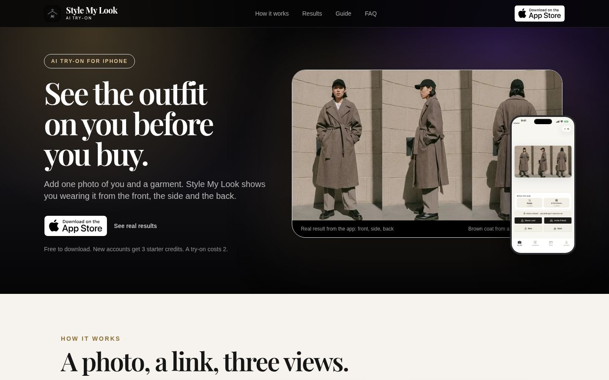
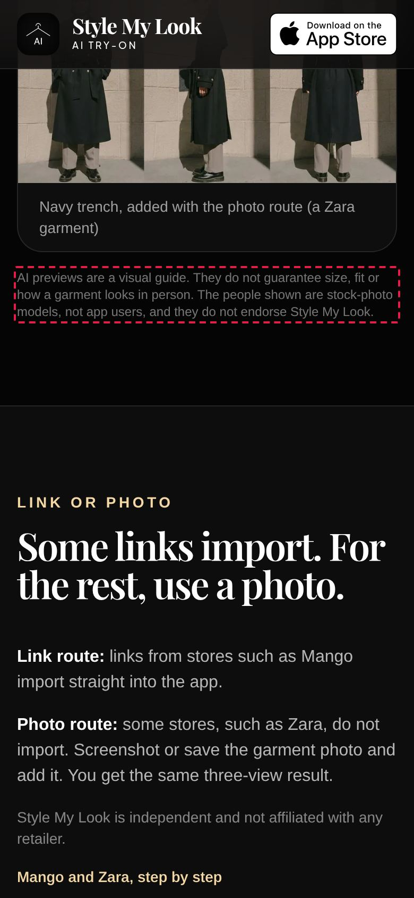
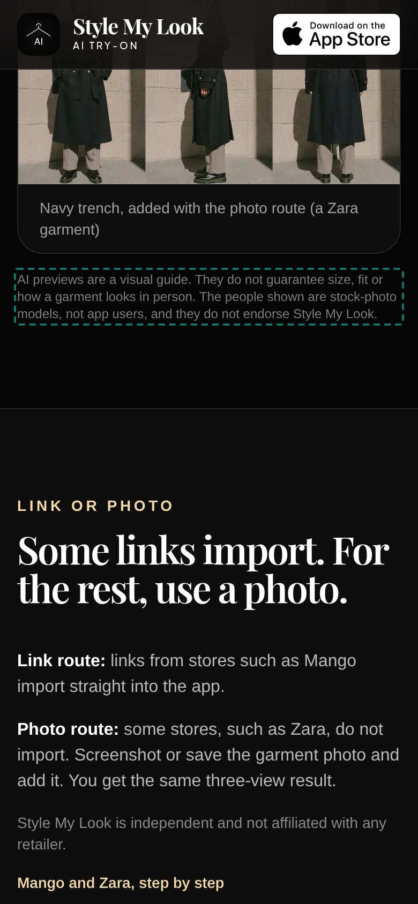

https://aitryon.studio
Builder detected: not detected · Stack: Vite SPA, shadcn/ui + lucide · Fonts in use: -apple-system, Playfair Display, Plus Jakarta Sans

Elements must meet minimum color contrast ratio thresholds
Fix: Raise text contrast to WCAG AA (4.5:1 body, 3:1 large text). in $299 quick fix
Elements must have their visible text as part of their accessible name
Fix: Elements must have their visible text as part of their accessible name in $299 quick fix
Interactive and content-bearing UI text (links, buttons, nav items, labels, table cells, meta rows, timecodes) below 11px is a legibility failure, not a style choice.
Fix: Raise button/label text to at least 14px so controls are readable and tappable. in $299 quick fix
Most launch traffic is mobile; LCP over 2.5s loses visitors.
Fix: Compress/resize hero images (WebP/AVIF), lazy-load below the fold, split the JS bundle, preload the main font. in $299 quick fix
Purple/violet gradients and cyan-on-dark are the most recognizable tells of AI-generated UIs.
Fix: Replace the default purple/indigo-to-blue AI palette with brand colours. polish sprint
The "after" images were made by applying CSS changes in a local browser only. Nothing on the live site was changed. Dashed boxes mark the changed elements: red is now, green is fixed. These are the mechanical fixes (contrast, line-height, line length). The paid fix also covers changes that need a person: layout, type and copy.


Everything tagged "quick fix" above, sent as one PR or patch to your repo (Lovable/Bolt/v0 export or GitHub). Re-audit report included.
Quick fix plus type scale, spacing rhythm, palette and copy pass to remove the template look, plus mobile layout fixes. Before/after report included.
Automated, read-only checks on the public page on 9 Oct 2026: Impeccable 4.1.0 (59 deterministic rules, no LLM) at 1280px and 390px; axe-core 4.14.0 (WCAG 2.1 A/AA + best practice); Google Lighthouse 13.5 (mobile, simulated throttling); plus Shipshape checks for sideways scroll, tap targets, share/SEO metadata and console errors. Automated tools find a subset of issues. A clean result here does not mean the site is accessible or polished. Scores move between runs, Lighthouse performance especially. Prepared by Dor Avidan · avidandor@gmail.com · https://doravidan.github.io/shipshape-audit/.